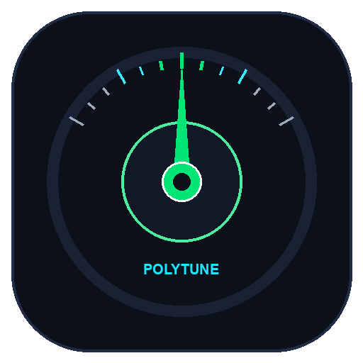

An idevali appPrecision in every note.
Chromatic guitar tuner with on-device mathematical DSP and precision tap-tempo metronome.

An idevali appChromatic guitar tuner with on-device mathematical DSP and precision tap-tempo metronome.